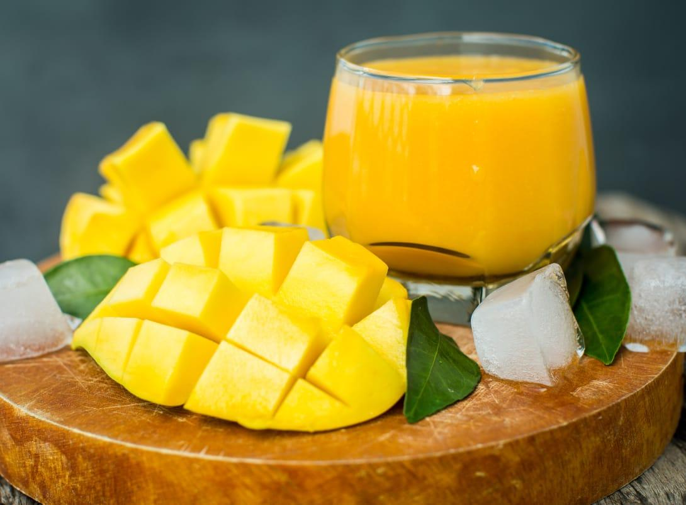

Manggo's Chagiya

Manggo's Chagiya adalah suatu bisnis yang bergerak di bidang kuliner yang menyediakan produk olahan dari mangga, Manggo's Chagiya ini didirikan untuk kalian yang
menginginkan olahan yang menyegarkan. Manggo's Chagiya itu sendiri diambil dari kata bahasa Inggris "Manggo" yang berarti Mangga dan "Chagiya" diambil dari bahasa Korea yang bisa diartikan sebagai "Sesuatu yang dicintai"
sehingga sangat cocok sekali bagi kalian sebagai pecinta buah mangga.